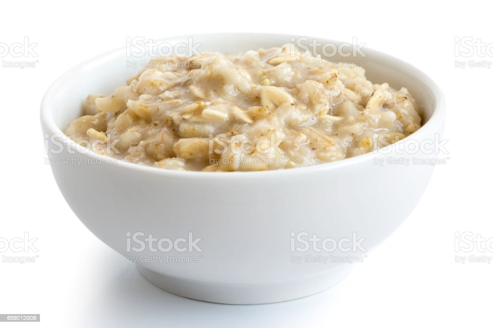

Oatmeal

Description
Plain oatmeal for when you just need a healthy dose of fiber to start your day.
Ingredients
- 1 Cup of oats
- 1 Tblspoon of Flaxseed
- 2 Cups of water
- Put oats, flasxeed and water into a bowl.
- Microwave for 1 to 1-1/2 minutes.
- Stir before serving.
Return to main page